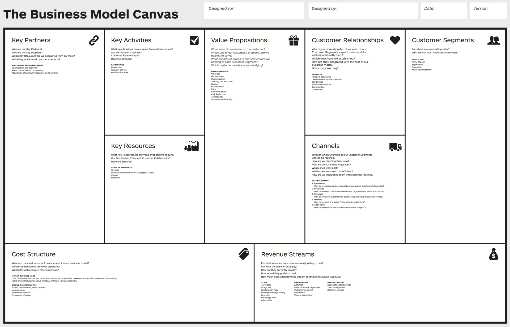

Business Model Canvas er en måde for at forstå en forretning på. Som multimediedesigner er det nemlig væsentligt at vide hvordan en forretning kører rundt, og især hvordan man sørger for at den bliver ved med det.
Business Model Canvas (BMC) er en forretningsmodel lavet af Alexander Osterwalders. BMC bruges til forretningsudvikling og for at skabe overblik over produkter og kunder. Det er derfor en metode, som ofte benyttes fra denne skabelon:
Som billedet viser, består modellen af 9 forskellige dele, som hver har en betydning for en forretning:
Kundesegmentet
Værditilbud
Kanaler
Kunderelationer
Indtægtsstrømme
Nøgleressourcer
Nøgleaktiviteter
Nøglepartnere
Omkostningsstruktur
"En forretningsmodel beskriver rationalet bag, hvordan en organisation skaber, leverer og fastholder værdi."
Handler om at kende sine kunder.
Enhver forretning ønsker at henvende sig til en bestemt målgruppe, da deres produkt er specifikt designet til dem. Derfor er det vigtigt for forretningen at forstå kundernes behov og adfærd, for bedst muligt at kunne sælge deres produkt. Uden kunder er der ingen forretning, trods alt.
Herfra findes der også forskellige former for kundesegmenter, fx massemarked, hvor der er en større kundegruppe og forretningen handler mere generaliserende, i forhold til nichemarkedet, som er meget mere specifik i deres kundegruppe og tilpasser sig deres behov.
Handler om kundernes behov og hvordan de bliver opfyldt.
Med værditilbud vil forretningen gennem produktet have kundens behov opfyldt. Her skaber forretningen øgede tilbud eller forbedrede funktioner for kunden.
Handler om hvor forretningen kommunikerer til kunderne.
Kanaler er de steder hvor forretningen og kunderne mødes, fx i værditilbud. Det er fx i distribution- kommunikation-, eller salgskanaler, som kunne være over sociale medier, eller nyhedsbreve på mail.
Handler om forretningens forhold til kunderne.
Igennem kanalen kan det blive vigtigt for, fx en multimediedesigner, at skabe kunderelationer for lære sit kundesegment bedre at kende. Her handler det om at få nye kunder til forretningen, men især også at fastholde de kunder man allerede har.
Handler om hvordan forretningen tjener penge.
Forretningen er lavet for at tjene penge. Derfor er det vigtigt for forretningen at have et overblik over hvordan de tjener penge. Det kan fx være igennem værditilbud, hvor kunderne bider på. Her findes der også andre måde at sikre indtægt fra kundesegment, fx med brugsgebyr eller abonnement.
Handler om virksomhedens vigtigste ressource.
Nøgleressourcer sørger for at forretningen kan fungere. Ressourcerne kan fx være immaterielle fysiske, menneskelige eller økonomiske.
Handler om at forretningen skal skabe aktiviteter.
Forretningen skal spørge for at opretholde alle disse dele af forretningsmodellen. Det kan fx være at skabe events, film eller lignende.
Handler om forretningens partnere og leverandører.
Nøglepartnere handler om de andre forretninger, som forretningen arbejder sammen med. Formålet kan fx være for større produktion eller for at skaffe produkter fra andre udenlands.
Handler om forretningens omkostninger..
Forretningen må bruge penge på mange forskellige ting. Det kan fx være ved nøgleaktiviteter, men kan også være ”mindre” ting som løn til medarbejdere. Her er det vigtigt for forretningen at kende til sine største omkostninger.
• Business Model Canvas (BMC) - Morten Kluw Wøldike Schmith
• Business Model Generation, side 20-58 - Alexander Osterwalder & Yves Pigneur
BMC har nok været et af de tungeste emner at skulle forstå indtil videre. Lektierne dertil var virkelig svære at komme igennem, men jeg var rigtig glad for undervisningen dertil. Det blev meget lettere at forstå når man fik det i hænderne, fremfor kun at læse om det. Jeg lærte rigtig meget af at sætte LEGO, som forretning, på modellen sammen med Agnete i undervisningen og så forklarer vores tanker bag det til resten af klassen. Jeg kan især her se det store potentiale for multimediedesignere – vi kan knap nok komme uden om at arbejde for en forretning på en eller anden måde, så derfor er det naturligvis vigtigt for os at kunne forstå og bruge det. I mange dele af modellen kunne jeg også se hvordan en multimediedesigner ville få en rolle.